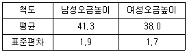
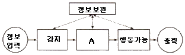
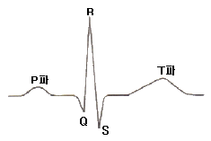
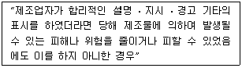
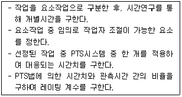

인간공학기사 (2012-08-26 기출문제)
1과목: 인간공학개론
1. 다음 중 음량 기본속성에 관한 척도인 phon과 sone에 관한 설명으로 틀린 것은?
- 1000㎐의 20㏈의 20phon이다.
- sone은 40㏈의 1000㎐의 순음을 기준으로 하여 다른 음의 상대적인 크기를 설정하는 척도의 단위이다.
- phon은 1000㎐의 음의 강도를 기준으로 각 주파수별 동일한 음량을 주는 음압을 평가하는 척도의 단위이다.
- sone은 여러 음의 주관적인 갈기만을 말할 뿐 다른 음과의 상대적인 주관적 크기에 대해서는 말하는 바가 없다.
(정답률: 57%)

2. 다음 중 인간의 눈에 관한 설명으로 옳은 것은?
- 간상세포는 황반(fovea) 중심에 밀집되어 있다.
- 망막의 간상세포(rod)는 색의 식별에 사용된다.
- 시각a(視角)은 물체와 눈 사이의 거리에 반비례한다.
- 원시는 수정체가 두꺼워져 먼 물체의 상이 망막 앞에 맺히는 현상을 말한다.
(정답률: 58%)
3. 다음 중 피부의 감각수용 기관의 종류에 해당되지 않는 것은?
- 압력 수용 감각
- 진동 감지 감각
- 온도 변화 감각
- 고통 감각
(정답률: 56%)
4. 다음 중 인체측정에 관한 설명으로 틀린 것은?
- 표준자세에서 움직이지 않는 상태를 인체측정기로 측정한 측정치를 구조적 치수라 한다.
- 활동 중인 신체의 자세를 측정한 것을 기능적 치수라 한다.
- 일반적으로 구조적 치수는 나이, 성별, 인종에 따라 다르게 나타난다.
- 인간-기계 시스템의 설계에서는 구조적 치수만을 활용하여야 한다.
(정답률: 78%)
5. 회전운동을 하는 조종장치의 레버를 20° 움직였을 때 표시장치의 커서는 2㎝ 이동하였다. 레버의 길이가 15㎝일 때 이 조종장치의 C/R비는 약 얼마인가?
- 2.62
- 5.24
- 8.33
- 10.48
(정답률: 79%)
6. 다음 중 인간의 시각 능력의 척도가 아닌 것은?
- 휘도(luminance)
- 시력(visual acuity)
- 조절능(accommodation)
- 대비감도(contrast sensitivity)
(정답률: 55%)
7. 남녀 공용으로 사용하는 의자의 높이를 조절식으로 설계하고자 한다. 다음 표를 참고하여 좌판높이의 조절범위에 대한 기준 값으로 가장 적당한 것은? (단, 5퍼센타일 계수는 1.645이다.)

- (38.0 + 1.7 × 1.645) ~ (41.3 + 1.9 × 1.645)
- (38.0 - 1.7 × 1.645) ~ (41.3 + 1.9 × 1.645)
- (38.0 + 1.7 × 1.645) ~ (41.3 - 1.9 × 1.645)
- (38.0 - 1.7 × 1.645) ~ (41.3 - 1.9 × 1.645)
(정답률: 68%)
8. 그림은 인간-기계 통합 체계의 인간 또는 기계에 의해서 수행되는 기본 기능의 유형이다. 다음 중 그림의 A부분에 가장 적합한 내용은?

- 확인
- 정보처리
- 통신
- 정보수용
(정답률: 80%)
9. 다음 중 일반적으로 청각적 표시장치에 적용되는 지침으로 적절하지 않은 것은?
- 신호음은 최소한 0.5 ~ 1초 동안 지속시킨다.
- 신호음은 배경소음과 다음 주파수를 사용한다.
- 300m 이상 멀리 보내는 신호음은 1000㎐이하의 주파수를 사용한다.
- 주변 소음은 주로 고주파이므로 은폐효과를 막기 위해 200㎐ 이하의 신호음을 사용하는 것이 좋다.
(정답률: 71%)
10. 자동차 운전같이 어떤 과정이나 가동 상태를 연속적으로 제어하는 시스템은 제어 계수(control order)에 의하여 연속 제어 조작 형태가 결정되는데 다음 중 이 시스템의 제어 계수에 관한 설명으로 옳은 것은?
- 0계(위치 제어)가 가장 긴 인간의 처리시간을 요한다.
- 1계(율 또는 속도 제어)가 가장 긴 인간의 처리시간을 요한다.
- 2계(가속도 제어)가 가장 긴 인간의 처리시간을 요한다.
- 모든 계에 있어 인간의 처리시간은 동일하다.
(정답률: 50%)
11. 다음 중 정보이론에 있어 정보량에 관한 설명으로 틀린 것은?
- 단위는 bit이다.
- N을 대안의 수라 할 때, 정보량은 log2N으로 구할 수 있다.
- 2bit는 두 가지 동일 확률하의 독립사건에 대한 정보량이다.
- 출현 가능성이 동일하지 않은 사건의 확률을 P라 할 때, 정보량은 log21/p로 나타낸다.
(정답률: 74%)
12. 정상 조명하에서 10m거리에서 볼 수 있는 시계를 설계하고자 한다. 시계의 눈금 단위가 1분일 때 문자판의 직경은 얼마 정도로 해야 하는가? (단, 일반적으로 눈금 단위의 길이는 1.3㎜로 한다.)
- 17.5㎝
- 18.31㎝
- 35㎝
- 70㎝
(정답률: 45%)
13. 다음 중 암호체계의 사용상 일반적 지침에서 암호의 변별성에 대한 설명으로 옳은 것은?
- 정보를 암호화한 자극은 검출이 가능하여야 한다.
- 자극과 반응 간의 관계가 인간의 기대와 모순되지 않아야 한다.
- 두 가지 이상의 암호 차원을 조합하여 사용하면 정보 전달이 촉진된다.
- 모든 암호표시는 감지장치에 의하여 다른 암호 표시와 구별될 수 있어야 한다.
(정답률: 72%)
14. 다음 중 인간공학(ergonomics)의 정의에 관한 설명으로 가장 적절하지 않은 것은?
- 인간이 포함된 환경에서 그 주변의 환경조건이 인간에 맞도록 설계·재설계되는 것이다.
- 인간의 작업과 작업환경을 인간의 정신적, 신체적 능력에 적용시키는 것을 목적으로 하는 과학이다.
- 건강, 안전, 복지, 작업성과 등의 개선을 요구하는 작업, 시스템, 제품, 환경을 인간의 신체·정신적 능력과 한계에 부합시키기 위해 인간 과학으로부터 지식을 생성·통합한다.
- 인간에게 질병, 건강장해와 안녕방해, 심각한 불쾌감 및 능률저하 등을 초래하는 작업환경 요인과 스트레스를 예측, 인식(측정), 평가, 관리(대책)하는 과학인 동시에 기술이다.
(정답률: 60%)
15. 다음 중 작업공간의 구성요소에 관한 설명으로 틀린 것은?
- 시각적 표시장치는 일반적으로 수평선 아래쪽으로 15°정도인 정상시선 주변 영역에 위치하도록 한다.
- 큰 힘을 필요로 하는 발조작 제어장치의 경우 신체중심의 뒤쪽에 위치하도록 한다.
- 손조작 제어장치의 최적 위치는 제어의 유형, 조작방법, 정확도 등의 성능기준에 의해 결정된다.
- 순차적 링크를 가지는 구성요소 간에는 거리를 최소화하여 배치한다.
(정답률: 75%)
16. 다음 중 통화이해도를 평가하는 척도가 아닌 것은?
- 명료도 지수(articulation index)
- 이해도 점수(intelligibility score)
- 소음 은폐 지수(noise masking score)
- 통화 간섭 수준(speech interference level)
(정답률: 70%)
17. 다음과 같이 직렬로 나열된 모터 중 ⑧의 모터에서 고장이 발생하여 수리할 때 숫자를 확인하지 않고 맨 끝의 모터를 수리하였다고 한다. 이때 발생한 인간의 오류모형은?
- 착오(mistake)
- 건망증(lapse)
- 실수(slip)
- 위반(violation)
(정답률: 73%)
18. 다음 중 신호검출이론(SDT)에서 반응기준을 구하는 식으로 옳은 것은?
- (소음 분포의 높이) × (신호 분포의 높이)
- (소음 분포의 높이) ÷ (신호 분포의 높이)
- (신호 분포의 높이) ÷ (소음 분포의 높이)
- (신호 분포의 높이) ÷ (소음 분포의 높이)2
(정답률: 53%)
19. 제어장치의 버튼을 누르기 위해 손가락이 움직이는 시간은 Fitts' law에 의해 설명될 수 있는데 다음 중 이에 대한 설명으로 적절하지 않은 것은?
- 난이도 지수는 상용로그함수 이다.
- 동작시간은 버튼의 너비와 반비례한다.
- 손가락이 움직이는 거리가 길수록 동작시간은 길어진다.
- 난이도 지수가 같다면 버튼의 너비와 이동거리가 달라도 이동시간은 같다.
(정답률: 33%)
20. 인간공학 연구에 사용되는 기준에서 다음 중 성격이 다른 하나는?
- 생리학적 지표
- 기계 신뢰도
- 인간성능 척도
- 주관적 반응
(정답률: 72%)
2과목: 작업생리학
21. 혈액 중 유형성분의 특성에 관한 설명으로 틀린 것은?
- 백혈구는 골수, 림프절 등에서 생성되고, 비장에서 파괴된다.
- 백혈구에는 핵이 있지만, 적혈구와 혈소판에는 핵이 없다.
- 적혈구, 백혈구, 혈소판 중 단위면적당 개수는 혈소판이 가장 많다.
- 적혈구의 수명은 100~120일이지만 혈소판의 수명은 7일 정도이다.
(정답률: 58%)
22. 천칭저울 위에 올려놓은 물체 A와 B는 평형을 이루고 있다. 물체 A는 저울의 중심에서 10cm 떨어져 있고 무게는 10kg이며 물체 B는 중심에서 20cm 떨어져있다고 가정하였을 때 물체 B의 무게는 얼마인가?
- 3kg
- 5kg
- 7kg
- 10kg
(정답률: 79%)
23. 다음 중 산업 현장에서 열 스트레스(heat stress)를 결정하는 주요 요소가 아닌 것은?
- 전도(conduction)
- 대류(convection)
- 복사(radiation)
- 증발(evaporation)
(정답률: 50%)
24. 다음 중 유산소 대사의 하나인 크렙스 사이클(Kreb's cycle)에서 일어나는 반응이 아닌 것은?
- 산화가 발생한다.
- 젖산이 생성된다.
- 이산화탄소가 생성된다.
- 구아노신 3인산(GTP)의 전환을 통하여 ATP가 생성된다.
(정답률: 63%)
25. 다음 중 최대산소소비능력(MAP)에 관한 설명으로 틀린 것은?
- 산소섭취량이 지속적으로 증가하는 수준을 말한다.
- 사춘기 이후 여성의 MAP는 남성의 65~75% 정도이다.
- 최대산소소비능력은 개인의 운동역량을 평가하는데 활용된다.
- MAP를 측정하기 위해서 주로 트레드밀(treadmill)이나 자전거 에르고미터(ergometer)를 활용한다.
(정답률: 75%)
26. 작업의 효율은 작업의 출력 대비 에너지소비량의 비율을 말하는데 다음 중 에너지소비량에 영향을 가장 적게 미치는 요인은?
- 작업장소
- 작업방법
- 작업도구
- 작업자세
(정답률: 60%)
27. 다음 중 뇌파와 관련된 내용이 올바르게 연결된 것은?
- β파 : 5 ~ 10Hz의 불규칙적인 파동이다.
- θ파 : 14 ~ 30Hz의 고(高)진폭파를 말한다.
- α파 : 2 ~ 5Hz로 얕은 수면상태에서 증가한다.
- δ파 : 4Hz 이하로 깊은 수면상태에서 나타난다.
(정답률: 72%)
28. 다음 중 인간의 근육에 관한 설명으로 틀린 것은?
- 근조직은 형태와 기능에 따라 골격근, 평활근, 심근으로 분류된다.
- 골격근은 육안으로 식별이 가능하며, 적근, 백근, 중간근으로 분류된다.
- 근수축에 직접 사용되는 에너지원은 ATP(adenosine triphosphate)이다.
- 적근은 체표면 가까이에 존재하며, 주로 급속한 동작을 하기 때문에 쉽게 피로해진다.
(정답률: 47%)
29. 일반적으로 소음계는 주파수에 따른 사라의 느낌을 감안하여 A, B, C 세 가지 특성에 음압을 측정할 수 있도록 보정되어 있는데 A 특성치란 몇 phon의 등 음량곡선과 비슷하게 주파수에 따른 반응을 보정하여 측정한 음압수준을 말하는가?
- 20
- 40
- 70
- 100
(정답률: 80%)
30. 다음 중 진동이 인체에 미치는 영향에 대한 설명으로 적절하지 않은 것은?
- 진동은 시력, 추적 능력 등의 손상을 초래한다.
- 시간이 경과함에 있어 영구 청력손실을 가져온다.
- 진동으로 인해 내분비계 반응 장애가 나타날 수 있다.
- 정확한 근육조절을 요구하는 작업의 경우 그 효율이 저하된다.
(정답률: 69%)
31. 그림과 같은 심전도에서 나타나는 P파는 심장의 어떤 상태를 의미하는 것인가?

- 심방의 탈분극
- 심실의 재분극
- 심실의 탈분극
- 심방의 재분극
(정답률: 68%)
32. 다음 중 최대근력의 50% 정도의 힘으로 유지할 수 있는 시간은?
- 1분
- 5분
- 10분
- 15분
(정답률: 67%)
33. 다음 중 교대작업에 관한 설명으로 옳은 것은?
- 교대작업은 야간 → 저녁 → 주간 순으로 하는 것이 좋다.
- 교대일정은 정기적이고, 근로자가 예측 가능하도록 해야 한다.
- 신체의 적응을 위하여 야간근무는 7일 정도로 지속되어야 한다.
- 야간 교대시간은 가급적 자정 이후로 하고, 아침 교대시간은 오전 5~6시 이전에 하는 것이 좋다.
(정답률: 81%)
34. 다음 중 작업부하량에 따라 휴식시간을 산정할 때 가장 관련이 깊은 지수는?
- 눈 깜박임 수(blink rate)
- 점멸 융합 주파수(flicker test)
- 부정맥 지수(cardiac arrhythmia)
- 에너지 대사율(relative metabolic rate)
(정답률: 77%)
35. 다음 중 소음에 의한 청력손실이 가장 크게 발생하는 주파수 대역은?
- 1000Hz
- 2000Hz
- 4000Hz
- 10000Hz
(정답률: 87%)
36. 습구온도가 25℃며, 건구온도가 30℃일 때 Oxford 지수는 얼마인가?
- 25.75
- 26.5
- 28.5
- 29.25
(정답률: 50%)
37. 다음 중 조도(Illuminance)의 단위는?
- lumen(lm)
- candela(cd)
- lux(lx)
- foot-lambert(fL)
(정답률: 79%)
38. 다음 중 동일한 관절운동을 일으키는 주동근(agonist)과 반대되는 작용을 하는 근육은?
- 고정근(stabilizer)
- 중화근(neutralizer)
- 길항근(antagonists)
- 보조 주동근(assistant mover)
(정답률: 78%)
39. 다음 중 신경계에 관한 설명으로 틀린 것은?
- 체신경계는 피부, 골격근, 뼈 등에 분포한다.
- 중추신경계는 척수신경과 말초신경으로 이루어진다.
- 자율신경계는 교감신경계와 부교감신경계로 세분된다.
- 기능적으로는 체신경계와 자율신경계로 나눌 수 있다.
(정답률: 58%)
40. 다음 중 신체 부위가 몸의 중심선을 향하여 안쪽으로 회전하는 동작을 나타내는 용어는?
- 신전(extension)
- 외전(abduction)
- 내선(medial rotation)
- 외선(lateral rotation)
(정답률: 78%)
3과목: 산업심리학 및 관계법규
41. 피들러(F.E.Fiedler)의 상황적합적 리더십 특성이론에서 리더에게 호의성 여부를 결정하는 리더십 상황이 아닌 것은?
- 리더-구성원 관계
- 과업구조
- 리더의 직위권한
- 부하의 수
(정답률: 65%)
42. 다음 중 귀납적 추론을 통한 시스템 안전 분석 기법이 아닌 것은?
- ETA
- FTA
- PHA
- FMEA
(정답률: 62%)
43. 다음 중 레윈(Lewin)의 인간행동에 대한 설명으로 옳은 것은?
- 인간의 행동은 개인적 특성(P)과 환경(E)의 상호 함수관계이다.
- 인간의 욕구(needs)는 1차적 욕구와 2차적 욕구로 구분된다.
- 동작시간은 동작의 거리와 종류에 따라 다르게 나타난다.
- 집단행동은 통제적 집단행동과 비통제적 집단행동으로 구분할 수 있다.
(정답률: 71%)
44. 다음 중 맥그리거(McGregor)가 주장한 Y이론의 관리 처방에 해당되지 않은 것은?
- 목표에 의한 관리
- 민주적 리더십의 확립
- 분권화와 권한의 위임
- 경제적 보상체제의 강화
(정답률: 75%)
45. 상시근로자 1000명이 근무하는 사업장의 강도율이 0.6이었다. 이 사업장에서 재해발생으로 인한 연간총근로 손실일수는 며칠인가? (단, 근로자 1인당 연간 2400시간을 근무하였다.)
- 1220일
- 1440일
- 1630일
- 1320일
(정답률: 75%)
46. 다음 중 스트레스에 관한 설명으로 틀린 것은?
- 스트레스 수준은 작업 성과와 정비례의 관계에 있다.
- 위협적인 환경특성에 대한 개인의 반응이라고 볼 수 있다.
- 지나친 스트레스를 지속적으로 받으면 인체는 자기조절능력을 상실할 수 있다.
- 적정수준의 스트레스는 작업 성과에 긍정적으로 작용할 수 있다.
(정답률: 73%)
47. 다음 중 상해의 종류에 해당하지 않는 것은?
- 협착
- 골절
- 중독 ㆍ 질식
- 부종
(정답률: 63%)
48. 다음 중 재해예방의 4원칙에 해당되지 않는 것은?
- 보상 분배의 원칙
- 예방 가능의 원칙
- 손실 우연의 원칙
- 대책 선정의 원칙
(정답률: 88%)
49. 다음 중 호손(Hawthorne) 연구결과 작업자의 작업능률에 영향을 미치는 것이라고 주장한 내용과 가장 거리가 먼 것은?
- 동기부여
- 의사소통
- 인간관계
- 물리적 작업조건
(정답률: 60%)
50. 다음 중 실수(slip)와 착오(mistake)에 관한 설명으로 옳은 것은?
- 실수와 착오는 의식적인 행동에서 발생하는 오류이다.
- 실수와 착오는 불안전 행동으로 인한 오류이다.
- 실수는 의도는 올바른 것이지만 반응의 실행이 올바른 것이 아닌 경우이고, 착오는 부적합한 의도를 가지고 행동으로 옮긴 경우를 말한다.
- 착오와 위반은 불안전 행동으로 인한 오류이다.
(정답률: 67%)
51. 다음 설명에 해당하는 제조물책임법상 결함의 종류는?

- 제조상의 결함
- 설계상의 결함
- 표시상의 결함
- 검사상의 결함
(정답률: 81%)
52. 다음 중 휴먼 에러의 배후요인 4가지(4M)에 속하지 않는 것은?
- Man
- Machine
- Motive
- Management
(정답률: 84%)
53. 다음 중 산업 재해 발생시 처리과정에 있어 가장 먼저 실시하여야 하는 사항은?
- 피해자 응급조치
- 사상자 보고
- 원인 강구
- 대책 수립
(정답률: 85%)
54. 다음 중 헤드십(headship)과 리더십(leadership)을 상대적으로 비교, 설명한 것으로 헤드십의 특징에 해당되는 것은?
- 민주주의적 지휘형태이다.
- 구성원과의 사회적 간격이 넓다.
- 권한의 근거는 개인의 능력에 따른다.
- 집단의 구성원들에 의해 선출된 지도자이다.
(정답률: 79%)
55. 테일러(F.W Taylor)에 의해 주장된 조직 형태로서 관리자가 일정한 관리기능을 담당하도록 기능별 전문화가 이루어진 조직은?
- 위원회 조직
- 직능식 조직
- 프로젝트 조직
- 사업부제 조직
(정답률: 81%)
56. 작업자가 제어반의 압력계를 계속적으로 모니터링하는 작업에서 압력계를 잘못 읽어 에러를 범할 확률이 100시간에 1회로 일정한 것으로 조사되었다. 작업을 시작한 후 200시간 시점에서의 인간신뢰도는 약 얼마로 추정되는가?
- 0.02
- 0.98
- 0.135
- 0.865
(정답률: 27%)
57. 시각을 통해 2가지 서로 다른 자극을 제시하고 선택 반응시간을 측정한 결과가 1초였다면, 4가지 서로 다른 자극에 대한 선택반응시간은 몇 초이겠는가? (단, 각 자극의 출현확률은 동일하고, 시각 자극에 반응을 하는데 소요되는 시간은 0.2초라 가정하며, Hick-Hymann의 법칙에 따른다.)
- 1초
- 1.4초
- 1.8초
- 2초
(정답률: 59%)
58. 스트레스의 관리 방안 중 조직 수준의 관리 방안과 가장 거리가 먼 것은?
- 조직 구성원에게 이미 할당된 과업을 변경시킨다.
- 권한을 분권화시키고 의사결정에의 참여기회를 확대한다.
- 융통성있는 작업계획을 통하여 개인의 재량권과 통제권을 확대시킨다.
- 보살핌, 금전적 지원의 필요성이 있는 사람에게 도움을 준다.
(정답률: 59%)
59. 다음 중 에러 발생 가능성이 가장 낮은 의식수준은?
- 의식수준 0
- 의식수준 I
- 의식수준 II
- 의식수준 III
(정답률: 75%)
60. 보행 신호등이 막 바뀌어도 자동차가 움직이기까지는 아직 시간이 있다고 스스로 판단하여 신호등을 건너는 경우는 어떤 부주의 상태인가?
- 근도반응
- 억측판단
- 초조반응
- 의식의 과잉
(정답률: 86%)
4과목: 근골격계질환 예방을 위한 작업관리
61. 다음 중 근골격계질환 예방을 위한 개선 방안으로 적절하지 않은 것은?
- 높이와 각도가 조절 가능한 작업대를 제공한다.
- 직무확대를 통하여 한 작업자가 할 수 있는 일의 다양성을 넓힌다.
- 전문적인 스트레칭과 체조 등을 교육하고 작업 중 수시로 실시하게 유도한다.
- 중량물 운반 등 특정작업에 적합한 작업자를 선별하여 상대적 위험도를 경감시킨다.
(정답률: 70%)
62. 다음 중 동작경제의 원칙에 있어 작업장 배치에 관한 원칙에 해당하는 것은?
- 각 손가락이 서로 다른 작업을 할 때 작업량을 각 손가락의 능력에 맞게 분배한다.
- 사용하는 장소에 부품이 가까이 도달할 수 있도록 중력을 이용한 부품 상자나 용기를 사용한다.
- 손과 신체의 동작은 작업을 원만하게 처리할 수 있는 범위 내에서 가장 낮은 동작등급을 사용한다.
- 눈의 초점을 모아야 할 수 있는 작업은 가능한 적게하고, 이것이 불가피할 경우 두 작업간의 거리를 짧게 한다.
(정답률: 69%)
63. 다음 중 작업관리의 목적으로 가장 적절한 것은?
- 공정의 재배치를 목적으로 한다.
- 자동화를 통한 위험작업의 제거를 목적으로 한다.
- 표준시간을 선정하여 동일 임금 지급을 목적으로 한다.
- 작업을 체계적으로 하여 생산성 향상을 목적으로 한다.
(정답률: 67%)
64. 관측평균은 1분, Rating 계수는 120%, 여유시간은 0.⑤분이다. 다음 중 내경법에 의한 여유율과 표준시간을 올바르게 나열한 것은?
- 여유율 : 4.0%, 표준시간 : 1.⑤분
- 여유율 : 4.0%, 표준시간 : 1.25분
- 여유율 : 4.2%, 표준시간 : 1.⑤분
- 여유율 : 4.2%, 표준시간 : 1.25분
(정답률: 59%)
65. 다음 중 병원의 간호사 또는 간호조무사, 수의사 등의 근골격계부담 작업의 유해요인 조사시 작업분석 ㆍ 평가도구로 가장 적절한 것은?
- JSI(Job Strain Index)
- ACGIH Hand/Arm Vibration TLV
- REBA(Rapid Entire Body Assessment)
- NIOSH 들기작업지침(Revised NIOSH Lifting Equation)
(정답률: 63%)
66. 다음 중 간트차트(Gantt chart)에 관한 설명으로 옳지 않은 것은?
- 각 과제 간의 상호 연관사항을 파악하기에 용이하다.
- 계획 활동의 예측완료시간은 막대모양으로 표시된다.
- 기계의 사용에 대한 필요시간과 일정을 표시할 때 이용되기도 한다.
- 예정사항과 실제 성과를 기록 비교하여 작업을 관리하는 계획도표이다.
(정답률: 37%)
67. 다음 중 유통선도(flow diagram)에 관한 설명으로 적절하지 않은 것은?
- 자재흐름의 혼잡지역 파악
- 시설물의 위치나 배치관계 파악
- 공정과정의 역류현상 발생유무 점검
- 운반과정에서 물품의 보관 내용 파악
(정답률: 77%)
68. NIOSH의 들기작업 지침에서 들기지수 값이 1 이 되는 경우 대상의 무게는 얼마인가?
- 18kg
- 21kg
- 23kg
- 25kg
(정답률: 73%)
69. 다음 중 개선의 ECRS에 해당하는 것은?
- eliminate
- collect
- reduction
- standardization
(정답률: 71%)
70. 다음 중 근골격계질환 발생의 작업요인으로서 직접적인 위험요인이 아닌 것은?
- 작업자의 숙련 정도
- 부자연스런 작업자세
- 과도한 힘의 사용
- 높은 빈도의 반복성
(정답률: 83%)
71. 다음 중 7 TMU(Time Measurement Unit)를 초 단위로 환산하면 몇 초인가?
- 0.025초
- 0.252초
- 1.26초
- 2.52초
(정답률: 75%)
72. 다음 설명을 수행도 평가의 어느 방법을 설명한 것인가?

- 객관적 평가법
- 합성평가법
- 속도평가법
- 웨스팅하우스시스템
(정답률: 59%)
73. 다음 중 수공구의 개선방법과 가장 관계가 먼 것은?
- 손목을 똑바로 펴서 사용한다.
- 수공구 대신 동력공구를 사용한다.
- 지속적인 정적 근육부하를 방지한다.
- 가능하면 손잡이의 접촉면을 작게 한다.
(정답률: 92%)
74. 다음 중 사업장 근골격계질환 예방관리 프로그램에 있어 예방 ㆍ 관리추진팀의 구성 요령으로 가장 적절한 것은?
- 회사 대표가 반드시 참석하여야 한다.
- 사업장 별로 예방 ㆍ 관리추진팀을 구성하여야 하며, 대규모 사업장이라도 부서별로는 구성할 수 없다.
- 예방 ㆍ 관리추진팀에는 예산 및 별도 회계권을 부여하는 것이 일반적이다.
- 산업안전보건위원회가 구성된 사업장은 예방 ㆍ 관리추진 팀의 업무를 위원회에 위임할 수 있다.
(정답률: 65%)
75. WS(Work sampling)법에 있어 샘플링의 종류 중 계층별 샘플링(stratified sampling)의 장점으로 적합하지 않은 것은?
- 일정 계획을 수정하기가 용이하다.
- 완전한 랜덤 샘플링보다 관측일정을 계획하기 쉽다.
- 주기성과 영향력에 관한 문제를 배제하는데 가장 효과적이다.
- 적합하게 계층을 분류하면 층별로 하지 않은 경우보다 분산이 적어진다.
(정답률: 41%)
76. 다음 중 서블릭(Therblig)에 관한 설명으로 틀린 것은?
- 빈손이동(TE)은 효율적 서블릭이다.
- 작업측정을 통한 시간산출의 단위이다.
- 분석과정에서 시간은 스톱워치로 측정한다.
- 18개의 동작 중 17가지만 기호로 이용된다.
(정답률: 40%)
77. 다음 중 근골격계질환의 정의로 가장 적절한 것은?
- 작업장의 불안전 요소로 인한 사고성 재해를 말한다.
- 과도한 직무스트레스에 의한 뇌심혈관계의 이상증상을 말한다.
- 부적절할 작업환경과 과도한 작업부하가 원인이 된 작업관련성 질환이다.
- 직업병, 안전사고를 모두 포함하는 포괄적 개념의 산업재해를 말한다.
(정답률: 80%)
78. 다음 중 근골격계질환의 관리방안에 있어 공학적 개선방안에 해당되지 않는 것은?
- 작업속도의 조절
- 작업 공구의 개선
- 작업대 높이의 조절
- 자재 운반시 동력기계장치의 사용
(정답률: 72%)
79. 생수회사의 한 공정에서 이루어지는 생수 제조를 위한 요소작업시간의 합은 0.8분이다. 회사에서는 한달간 50000개의 생수를 제조하려 할 때 이공정의 한달 평균 작업시간이 200시간이라면 이 회사는 최소 몇 개의 공정을 구성해야 하는가?
- 1개
- 2개
- 4개
- 6개
(정답률: 51%)
80. 다음 중 상완, 전완, 손목을 그룹 A로, 목, 상체, 다리를 그룹 B로 나누어 측정, 평가하는 유해요인의 평가기법은?
- RULA(rapid upper limb assessment)
- REBA(rapid entire body assessment)
- OWAS(Ovako working posture analysis system)
- NIOSH 들기작업지침(Revised NIOSH lifting equation)
(정답률: 67%)